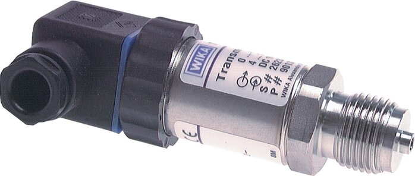

Khi chọn cảm biến áp suất WIKA (pressure transmitter), một quyết định quan trọng là độ chính xác: 0.2% span hay 0.5% span. Con số nghe nhỏ, nhưng nó ảnh hưởng trực tiếp tới chi phí thiết bị và tới việc vòng đo của bạn có "đủ tin" để điều khiển hay chỉ để nhìn cho biết. Chọn quá thấp thì sai số không chấp nhận được; chọn quá cao thì trả tiền cho độ chính xác mà quá trình không cần. Bài này giúp bạn hiểu bản chất "% span" và chọn đúng mức. Fast Group Engineering là đại lý cung cấp hàng chính hãng WIKA (Germany) tại Việt Nam.

Gợi ý chọn nhanh
- Cần đưa tín hiệu áp suất về PLC, DCS hoặc bộ hiển thị.
- Cần chọn 4-20 mA, 0-10 V, 2-wire hoặc độ chính xác.
- Cần so sánh transmitter tiêu chuẩn và màng phẳng.
- Dải đo, output, nguồn cấp và kết nối điện.
- Ren process, vật liệu wetted và cấp bảo vệ IP.
- Độ chính xác, nhiệt độ môi chất và yêu cầu chứng từ.
- Danh mục cảm biến áp suất WIKA.
- Bài 4-20 mA / 2-wire.
- Bài độ chính xác transmitter.
Tóm tắt nhanh
- % span = sai số tính theo % của toàn dải đo (measuring span).
- 0.2% span (vd dòng DMU-1ES): chính xác cao, cho vòng đo/điều khiển quan trọng.
- 0.5% span (vd dòng DMUB1ES): phổ thông, kinh tế cho giám sát thông thường.
- Chọn theo yêu cầu độ chính xác của vòng đo, không phải càng cao càng tốt.

"% span" nghĩa là gì?
Span là toàn dải đo (vd 0–16 bar → span = 16 bar). Sai số tính theo % span:
- Transmitter 0–16 bar, 0.5% span → sai số tối đa = 0.5% × 16 = ±0.08 bar.
- Cùng dải, 0.2% span → sai số tối đa = 0.2% × 16 = ±0.032 bar.
Sai số này thường đã gồm tuyến tính, trễ và lặp lại (tùy định nghĩa của nhà sản xuất — kiểm tra datasheet). Điểm mấu chốt: sai số là hằng số theo span, không theo giá trị đang đo. Vì thế một transmitter 0.5% span dải 0–16 bar cho sai số ±0.08 bar dù bạn đang đo 2 bar hay 15 bar. Nếu áp làm việc thực tế chỉ quanh 2 bar, ±0.08 bar là gần 4% giá trị đọc — khá lớn. Đây là lý do việc chọn dải đo hợp lý quan trọng ngang việc chọn cấp chính xác.
So sánh 0.2% vs 0.5% span
| Tiêu chí | 0.2% span (vd DMU-1ES) | 0.5% span (vd DMUB1ES) |
|---|---|---|
| Độ chính xác | Cao | Trung bình |
| Chi phí | Cao hơn | Kinh tế |
| Vòng điều khiển | Phù hợp điều khiển chặt | Giám sát/chỉ thị |
| Ứng dụng | Đo áp quan trọng, ghi dữ liệu | Cảnh báo, giám sát chung |
Một ví dụ số cho dễ hình dung
Giả sử bạn giám sát áp lọc trên đường ống, áp làm việc 4 bar, và quy trình cho phép lệch tối đa ±0.05 bar mới đủ tin để cảnh báo tắc lọc sớm. Với transmitter dải 0–10 bar: bản 0.5% span cho sai số ±0.05 bar — vừa chạm ngưỡng, gần như không còn dự phòng; bản 0.2% span cho ±0.02 bar — thoải mái nằm trong yêu cầu. Ngược lại, nếu chỉ cần biết "có áp hay mất áp" thì 0.5% span là quá đủ và tiết kiệm hơn.
Khi nào chọn 0.2% span?
- Vòng điều khiển áp suất yêu cầu ổn định cao.
- Đo cho tính toán/ghi nhận cần độ tin cậy.
- Quá trình nhạy với sai lệch nhỏ.
- Cần đối chiếu với thiết bị chuẩn khi hiệu chuẩn định kỳ.
Khi nào 0.5% span là đủ?
- Giám sát áp suất chung, cảnh báo.
- Ứng dụng phổ thông, tối ưu chi phí.
- Sai số ±0.5% span nằm trong dung sai chấp nhận.
Đừng quên ảnh hưởng của nhiệt độ
Sai số cơ bản (0.2% hay 0.5% span) chỉ là một phần. Khi nhiệt độ môi chất hoặc môi trường thay đổi, transmitter còn có sai số nhiệt (temperature error) cộng thêm, thường ghi riêng trong datasheet dạng %/10 K. Với hệ có dao động nhiệt lớn (ngoài trời, gần lò, hơi nóng), sai số nhiệt có thể lớn hơn cả sai số cơ bản. Khi độ chính xác thực sự quan trọng, hãy cộng cả hai thành phần này để đánh giá tổng sai số thực tế, thay vì chỉ nhìn con số % span trên nhãn.
Yếu tố chọn khác ngoài độ chính xác
- Dải đo đúng áp làm việc.
- Tín hiệu 4–20 mA (2-wire) tương thích PLC.
- Kết nối process G½, NPT¼; flush nếu môi chất sệt.
- Vật liệu wetted 316L nếu ăn mòn.
- Nhiệt độ vận hành và cấp bảo vệ IP.
Sai lầm thường gặp
- Chọn span quá rộng "cho chắc": làm sai số tuyệt đối tại điểm làm việc tăng lên; nên chọn span sát áp thực tế.
- So con số của hai hãng mà bỏ định nghĩa: "accuracy" mỗi hãng gộp các thành phần khác nhau; phải đọc chú thích datasheet.
- Quên sai số nhiệt: lắp nơi nóng/lạnh biến thiên mà chỉ tính sai số cơ bản.
- Trả tiền cho 0.2% span khi chỉ cần cảnh báo: lãng phí ngân sách cho độ chính xác không dùng đến.
Độ chính xác ảnh hưởng thế nào tới tín hiệu 4–20 mA?
Transmitter chuyển áp thành dòng 4–20 mA tuyến tính: 4 mA ứng với 0% span, 20 mA ứng với 100% span, tức 16 mA trải đều cho toàn dải. Sai số 0.2% span tương đương khoảng ±0.032 mA trên tín hiệu, còn 0.5% span là ±0.08 mA. Khi PLC quy đổi ngược dòng điện ra giá trị áp, chính sai số này quyết định con số hiển thị "nhảy" nhiều hay ít. Ngoài ra, chất lượng dây dẫn, nhiễu điện và điện trở tiếp xúc cũng cộng thêm sai số vào vòng đo — nên đi dây tín hiệu tách khỏi dây động lực và dùng cáp có màn chắn cho các điểm đo quan trọng.
FAQ
% span và % FS khác nhau không?
Với transmitter, thường dùng % span; cần đọc kỹ định nghĩa trên datasheet (có gồm trễ/lặp lại hay không).
Có loại chính xác hơn 0.2% span không?
Có, cho ứng dụng đặc biệt (đo lường, chuẩn). Liên hệ để tư vấn model phù hợp.
Chọn dải đo thế nào để tối ưu sai số?
Chọn span sát áp làm việc; span quá lớn làm sai số tuyệt đối tăng. Nên để áp làm việc rơi vào khoảng 30–70% dải đo.
Độ chính xác có giữ nguyên theo thời gian không?
Sẽ trôi nhẹ (long-term drift). Với vòng đo quan trọng nên hiệu chuẩn định kỳ để duy trì độ tin cậy.
Turndown (rangeability) có liên quan gì tới độ chính xác?
Nếu transmitter cho phép chỉnh lại dải đo (turndown), càng thu hẹp span so với dải danh định thì sai số tương đối càng tăng. Nên chọn model có dải danh định gần với áp làm việc thay vì mua dải rộng rồi thu nhỏ quá nhiều.
Cần tư vấn chọn transmitter & báo giá?
Gửi dải đo, độ chính xác mong muốn, tín hiệu, kết nối để nhận báo giá trong 24h.
- Email: minhduc@fastgroup.vn · Zalo: (+84) 938 888 958
Fast Group Engineering – đại lý cung cấp hàng chính hãng WIKA (Germany) tại Việt Nam.
Bài liên quan: [Cảm biến áp suất WIKA 4–20 mA] · [Flush diaphragm transmitter] · [Bộ hiển thị 4–20 mA gắn tủ] · [Checklist RFQ]